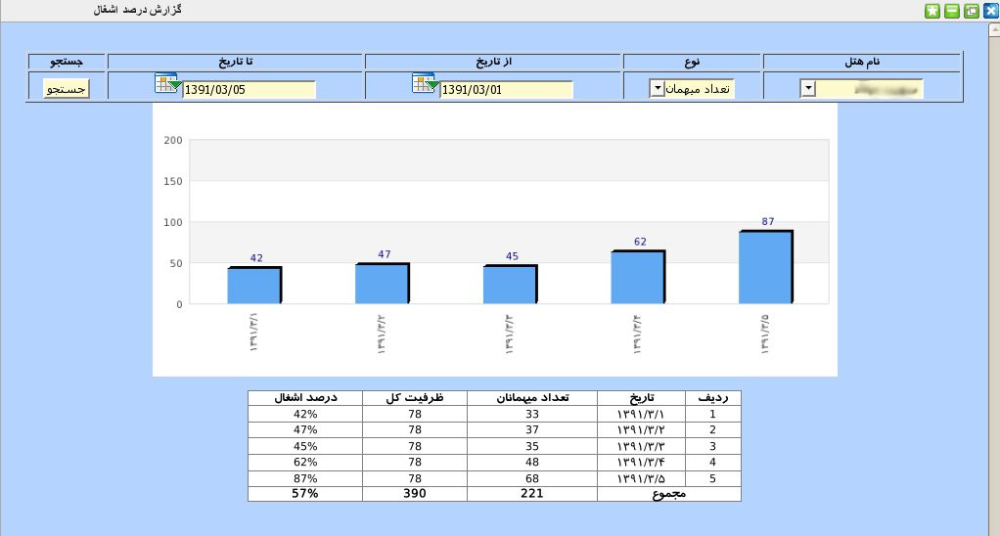
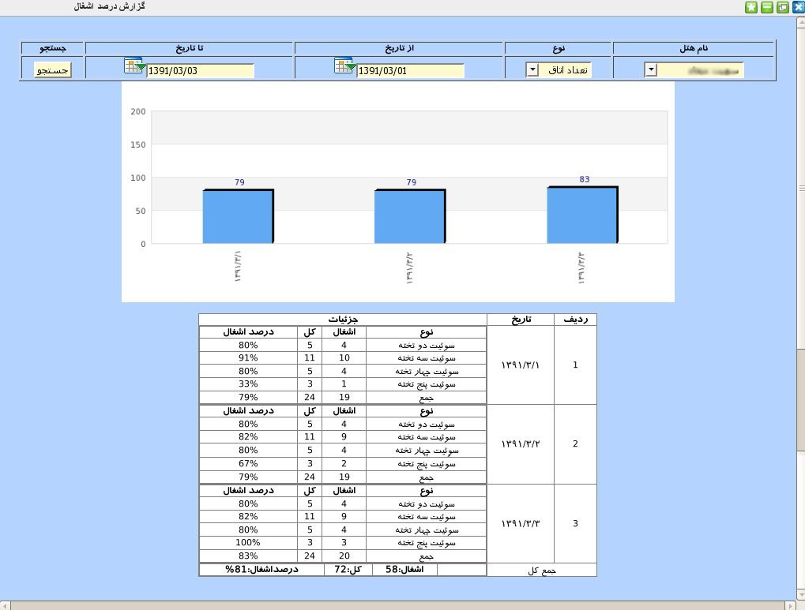

۱-گزارش در صد اشغال
یکی از دغدغه های مدیران هتل اطلاع از در صد اشغال هتل از نظر میهمان و تعداد اتاق بوده است. کاربر ارشد می تواند با مراجعه به این پنل گزارش کاملی از درصد اشغال هتل داشته باشد. این گزارش در دو نوع میهمان و تعداد اتاق ارائه می گردد. برای گزارشگیری ابتدا نام هتل و نوع گزارشگیری موردنظر را انتخاب نمایید سپس بازه تاریخی مورد نظر را از تقویم های تعبیه شده در کادر مخصوص تاریخ انتخاب نمایید و در انتها بر روی جستجو کلیک نمایید.


ابتدا چارت درصد اشغال سپس جدولی حاوی اطلاعات کاملی در مورد تاریخ و تعداد میهمان و تعداد اتاق و .. نمایش داده می شود.